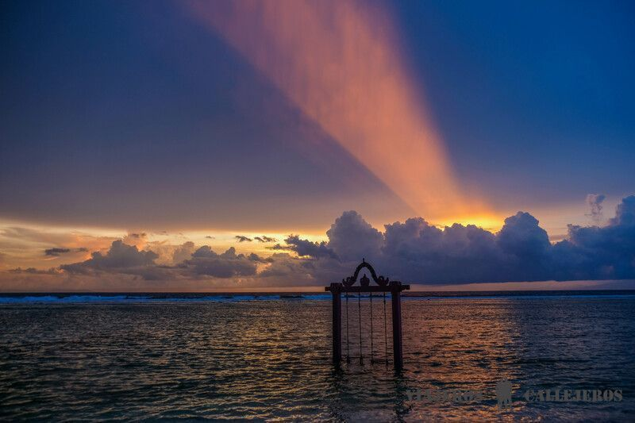
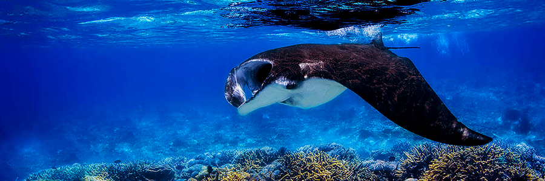

Otro de nuestros lugares favoritos que ver en Indonesia son las pequeñas islas Gili que se encuentran a menos de dos horas en barco de Bali. Estas tres pequeñas islas, Gili Trawangan, Gili Meno y Gili Air, rodeadas de un espectacular fondo marino, son un paraíso para los que buscan unos días de relax después de un gran viaje por el país y para los buceadores. Hay que tener en cuenta que hay muchas cosas que hacer en las Islas Gili y que cada una de ellas tiene unas características y un ambiente diferente, por lo que hay que elegir bien en la que te vas a alojar o ir cambiando, si disponéis de tiempo suficiente. Gili Trawangan es la isla menos tranquila y tiene numerosos hoteles, villas, restaurantes, discotecas, empresas de submarinismo y gente joven dispuesta a divertirse. Gili Air, aunque ha crecido mucho últimamente, todavía conserva ambiente mochilero y una buena infraestructura, que la hacen para nosotros, la mejor de las opciones y uno de los lugares que visitar en Indonesia imprescindibles. Gili Meno, situada entre Gili Trawangan y Gili Air, es perfecta para parejas que quieran disfrutar de la playa y de un ambiente más relajado, aunque también es la que cuenta con menos infraestructuras. Para llegar a las Islas Gili la mejor opción, ya sea desde la turística Bali o la vecina Lombok, es con barco rápido. La mayoría de viajeros contratan un paquete que incluye el transporte desde el hotel al puerto y el traslado en barco rápido a la isla. El precio está entre 70 y 90 euros, ida y vuelta y una buena opción es reservar con antelación el ticket a un precio parecido y con una agencia de confianza. para evitar sorpresas de última hora.
El Parque Nacional de Bromo, situado al este de Java, es uno de los paisajes volcánicos más espectaculares del mundo y otro de los lugares que visitar en Indonesia imprescindibles. Este inmenso parque tiene en el volcán Bromo, uno de los volcanes más activos de Java, el volcán Semeru que es el más alto de Java con 3676 metros y el Mar de Arena de Tenger de 16 kilómetros de diámetro, sus lugares más destacados. Para poder disfrutar de una vista completa de estos 3 lugares es imprescindible subir antes del amanecer al mirador situado en la montaña Gunung Penanjaka desde donde podrás ver la salida del sol. Después del amanecer puedes bajar hasta el «El Mar de Arena», una extensa área de arena volcánica, que parece un paisaje lunar, en el que incluso podrás ver hasta un templo hindú y subir por unas escaleras al cráter del Monte Bromo, dependiendo del nivel de actividad y de emanación de gases del volcán. Nosotros llegamos al Parque Nacional de Bromo desde la ciudad de Malang contratando un 4×4 que nos llevó hasta el mirador y la zona del Mar de Arena. Puedes completar la ruta de volcanes de Java con un trekking al Ijen, otro de los volcanes más famosos que ver en Indonesia, en el que trabajan mineros recogiendo bloques de azufre en condiciones infrahumanas.
Sumatra, la isla más grande que visitar en Indonesia y la sexta del mundo, ofrece una variedad de experiencias y paisajes difíciles de igualar en cualquier otro lugar del mundo. En esta isla podrás pasear entre terrazas de arroz o por la exuberante selva, relajarte en tranquilas playas, practicar snorkel o submarinismo en sus aguas transparentes, hacer surf, ver orangutanes en libertad y con mucha suerte un tigre, subir a un volcán y sobre todo, sentir la hospitalidad de su gente. Hay que tener en cuenta Sumatra junto a Borneo son los dos únicos lugares del mundo donde puedes ver orangutanes en libertad, siendo en este caso obligado desplazarte a la zona de Bukit Lawang y el Parque Nacional de Gunung Leuser. Otra de las mejores experiencias de Sumatra es subir a alguno de los volcanes activos como el Sibayak, Sinabung o al Merapi. Después de recorrer una parte de la isla en bus o avión puedes relajarte en la isla de Pulau Weh o las Islas Mentawai, perfectas para practicar snorkel y submarinismo.
Lombok, conocida como la Isla de las Perlas, permanece a la sombra de su vecina Bali manteniendo todavía unos niveles bajos de turismo que no corresponden con las maravillas que esconde. Esta isla salvaje en el predomina el verde de sus arrozales y de sus inmensos bosques llenos de cascadas, tiene en el trekking al volcán Rinjani y en las playas de aguas turquesas, sus principales atractivos, haciendo de esta isla, otro de los lugares que visitar en Indonesia. Además de estas maravillas, Lombok tiene otros lugares imprescindibles que ver como Sasak Village, una aldea tradicional de la etnia nativa de la isla, la playa de Kuta para iniciarse o practicar surf, las cascadas Tiu Kelep y Sengang Gile, la preciosa playa Tanjung Aan y templos hindús como el Meru. Para recorrer la isla puedes alquilar moto o contratar un coche con conductor, aunque es imprescindible tener en cuenta que hay que negociar el precio y los lugares que quieres ver antes de subir al taxi, ya que en ocasiones son aspectos que no suelen dejarse claros y así evitar sorpresas o malos entendidos en el trayecto.
Bunaken, un archipiélago de más de 1500 islas situado en el norte de la isla de Célebes, cerca de Filipinas, es uno de los mejores lugares para bucear en el mundo y que ver en Indonesia. La riqueza de su fondo marino lleno de corales y todo tipo de peces tropicales, la profundidad y la claridad de sus aguas además de la temperatura que se sitúa cerca de los 30 grados durante todo el año, lo convierten en un paraíso para todos los amantes del buceo. Para llegar a las islas de Bunaken la mejor opción es coger un vuelo interno a Manado y desde allí reservar las inmersiones con alguno de estos centros de buceo, que cumplen las normas de seguridad y calidad. Otro lugar impresionante para realizar inmersiones es Raja Ampat situado en Papúa Occidental, donde puedes encontrar un espacio marino protegido en el que se encuentra una de las mayores biodiversidades del mundo y podrás ver desde mantas, tortugas, tiburones, pez pipa fantasma, dudongs, hasta cientos de variedades de corales. Para llegar a Raja Ampat puedes coger un vuelo a Sorong y desde allí subir a un barco para llegar a alguna de las mejores islas para bucear como Mioskun y Misool, otros de los lugares que visitar en Indonesia.
Bali, conocida como la Isla de los Dioses, es uno de los lugares que visitar en Indonesia más imprescindibles y más paradisíacos del mundo. Para nosotros es también uno de nuestros lugares favoritos del mundo para vivir una temporada, algo que hicimos la última vez que visitamos la isla, al pasar más de un mes en una villa alquilada con Airbnb cerca de Ubud desde donde escribimos la guía de viaje a Bali por libre. Visitar algunos de los más de 10000 templos budistas, pasear por sus preciosos arrozales, bañarse bajo una impresionante cascada, practicar surf en las playas salvajes del sur, hacer alguna ruta de trekking como la subida al volcán Batur o darse un relajante masaje de pies o espalda, son solo algunas de las mejores cosas que hacer en Bali. Otro de los mejores consejos para viajar a Bali es alojarse en Ubud y hacer rutas de un día en moto, coche de alquiler o coche con conductor, por los lugares más bonitos de la isla, algo que te permitirá al mismo tiempo, conocer la isla y llevar jornadas relajadas para disfrutar al máximo del paraíso. Si prefieres pasar los últimos días de relax en las playas del sur de la isla, puedes hacer antes una ruta circular por los lugares que visitar en Bali más imprescindibles para después dedicar el final del viaje al relax más absoluto.